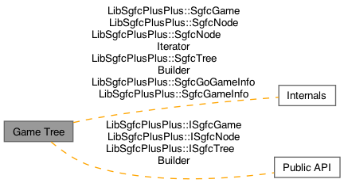

- Generated by
 1.16.1
1.16.1
|
libsgfc++ 3.0.0
A C++ library that uses SGFC to read and write SGF (Smart Game Format) data.
|
The Game Tree module contains functionality related to SGF game trees. More...

Classes | |
| class | LibSgfcPlusPlus::ISgfcGame |
| The ISgfcGame interface provides access to the data of one SGF game tree, in the form of a tree of ISgfcNode objects. More... | |
| class | LibSgfcPlusPlus::ISgfcNode |
| The ISgfcNode interface provides access to the data of a single SGF node in a tree of SGF nodes. ISgfcNode also provides methods to navigate the game tree. ISgfcNode provides no methods to manipulate the game tree - use ISgfcTreeBuilder for that purpose. More... | |
| class | LibSgfcPlusPlus::ISgfcTreeBuilder |
| The ISgfcTreeBuilder interface provides methods to manipulate the nodes of a game tree. More... | |
| class | LibSgfcPlusPlus::SgfcGame |
| The SgfcGame class provides an implementation of the ISgfcGame interface. See the interface header file for documentation. More... | |
| class | LibSgfcPlusPlus::SgfcNode |
| The SgfcNode class provides an implementation of the ISgfcNode interface. See the interface header file for documentation. More... | |
| class | LibSgfcPlusPlus::SgfcNodeIterator |
| The SgfcNodeIterator class encapsulates reusable algorithms for iterating over a tree of ISgfcNode objects. More... | |
| class | LibSgfcPlusPlus::SgfcTreeBuilder |
| The SgfcTreeBuilder class provides an implementation of the ISgfcTreeBuilder interface. See the interface header file for documentation. More... | |
| class | LibSgfcPlusPlus::SgfcGoGameInfo |
| The SgfcGoGameInfo class provides an implementation of the ISgfcGoGameInfo interface. See the interface header file for documentation. More... | |
| class | LibSgfcPlusPlus::SgfcGameInfo |
| The SgfcGameInfo class provides an implementation of the ISgfcGameInfo interface. See the interface header file for documentation. More... | |
The Game Tree module contains functionality related to SGF game trees.